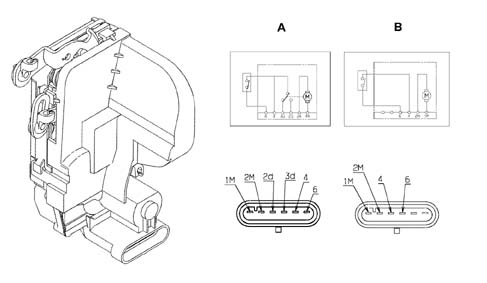
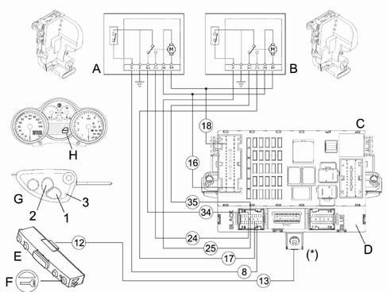

7005N front door central locking system
- Path
- Descriptions > 70 FITTINGS > 7005 PASSENGER COMPARTMENT FRONT SIDE DOORS > 7005N front door central locking system
- Kind
- system description
- Applies to
- all engines; all production periods
- Interactive page
- https://sloeber94.github.io/elrnDB-a147/en/#/3022541
Applies to: all engines; all production periods
COMPOSITION
DOOR LOCK/RELEASE
The front door catches contain a microshunt and a microswitch fitted to the handles (exterior and interior). These are mechanically connected to the electric motors that operate door lock/release.

A - Front lock pin-out B -Rear lock pin-out (without microshunt) 1M - front insulated motor brush to facia control unit PIN 18 (communication on body computer) 2M - from insulated motor brush to facia control unit PIN 16 (communication on body computer) 2d - from microshunt to body computer PIN 24 3d - from microshunt to body computer PIN 34 4 - earth 6 - from microswitch to body computer PIN 35
Lock control: position of microshunt contacts:
- from 4 - 2d was previously closed and now opens
- to 4 - 2d was previously open and now closes.
Release control: microshunt contact position:
- from 4 - 3d was previously closed and now opens
- to 4 - 2d was previously open and now closes.
Door open indicator microswitch on control panel: microswitch contact position:
- 1st click door open contacts 6 - 4 closed,
- 2nd click door closed contacts 6 - 4 open.
Door lock/release diagram
The following figure shows door lock/release.

A - left driver's door catch B - right passenger door catch C - facia control unit (NBC + NCP = NPL = facia node) D - body computer E - central panel F - lock/release control with built-in led G - ignition key (remote control) G1 - button for controlling door opening and deactivating alarm system G2 - button for controlling door closure and activating alarm system G3 - led indicating dispatch of code to receiver (body computer) H - when instruments (NQS): display indicating door open (warning light activated via CAN from body computer) * - PIN 13 on rear body computer connector
OPERATION
Catch lock/release can be controlled by:
- inserting the key in the front doors
- using a radio remote control]
- using a dedicated button (with a led) on the facia
the button has a single stable status that is activated by controlling:
- doors locked = led on with key turned ON.
- doors released = led off with key ON
REMOTE CONTROL UNIT
The remote control unit comes with three control buttons for lock, release and boot opening. A sending unit built into the key grip (transponder) works at a radio frequency of 433.92 Mhz, with a range of 20 m.
When a button is pressed, a variable code controlled by a mathematical algorithm (rolling code) is sent to a receiver built into the body computer (NBC). This node comes with a wire receiving aerial that emerges and runs into the facia wiring (the aerial plugs into the facia wiring harness by means of a connector and can therefore be changed).
Door closure lock operation (autoclose) 1 long blink
When the lock button is pressed (single, short press) all the doors are locked and the alarm (if present) is activated.
Door opening release operation (auto open) double short blink
When the release button is pressed (single short press), all doors are released and the alarm (if present) is deactivated;
The courtesy lights also come on for 15 seconds or until key on.
DOOR AND BOOT OPENING INDICATOR
This function is active with the key ON. Negative signals (earth) from the door open switches (front and rear wheel, and boot) combine to activate a warning light on the control panel (NQS). In practice, when one or more lines from the above switches are earthed for longer than 50 ms., the body computer that controls the status of these inputs downloads the status and relays it to the CAN network in this case, the instrument panel (NQS) is responsible for processing the information and controlling the warning light
DOOR OPEN MICROSWITCH
One is present for each door; these are actually the inputs from the control unit (NBC) used also by the door open check, courtesy light and alarm. If one is closed to earth (door open), the doors cannot be locked.
REPULSION FUNCTION
The lock and release motor control relays are located on the body computer printed circuit (NBC); Action time is 700 ms ± 10%. At the end of this period, the body checks switch position: if they do not tally it emits a repulsion command. The repulsion function takes place following a lock manoeuvre or after a release manoeuvre.
In practice, when the motors are controlled to lock and the operation is not carried out correctly (i.e. the controls do not tally), the body orders an opposite manoeuvre in an attempt to realign the catch microswitch contacts.
INHIBITION DUE TO A HIGH NUMBER OF MANOEUVRES
If 10 or 11 individual open/close manoeuvres are carried out within 25 seconds, the circuit inhibits the door lock/release function for a further 30 s. The last manoevre before inhibition is always a release.
After an inhibition period of 30 seconds, the circuit becomes operational if the bar commands are consistent.
If the switches are not aligned, the circuit need not carry out any manoeuvres.
The switches must be moved once inhibition is complete in order to carry out manoeuvres.
BATTERY FLAT
If battery voltage is low, and - within 20 ms of the onset of door lock/release manoeuvres - battery voltage (power supply) drops below a threshold of 9V, the device must suspend operation and enter inhibition mode for 30 s.
When supply voltage prior to actuation is already lower than 8 V, commands must be ignored.
PROTECTION
Protection is required for the motors alone in the case of relay binding. No protection is required against motor short circuit to Vbatt and earth because this is provided by the relevant fuse
If the fault persists (relay binding), the NBC does not implement any catch lock/release controls and informs the user of the fault.
If one of the two connections remains connected to Vbatt (relay with blocked contacts), the microprocessor must activate the other relay to restore the connections to the same potential and deactivate the motor current. The active relay coil continues to use power and can unfortunately drain the battery.